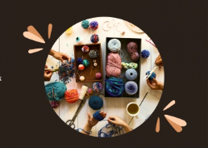
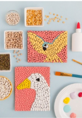
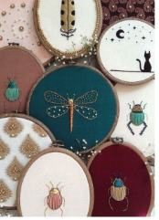

Здесь вы найдёте идеи и обретёте вдохновение для себя
У вас появилось свободное время и в не знаете чем себя увлечь?
Тогда вы пришли по адресу! На нашем сайте вы сможете найти себе рукоделие по душе.
Именно хобби наполняют жизнь смыслом, раскрашивая их яркими красками, и самое важное в них то, что они делают нашу жизнь насыщенней и увлекательней.
Наш список рукодильнических хобби как нельзя лучше подойдет под любые вкусы и желания. Не знаете с чего начать? Мы вам поможем!

1. У нас есть виды занятий, такие как алмазная мозаика и бисероплетение. Эти занятия помогают развить и натренировать мелкую моторику.


2.Вы можете попробовать вышивку или вязание. Такие виды рукоделия как нельзя лучше успокаивают и расслабляют.
3. Если ваша душа не лежит к мелким деталям и иголкам - попробуйте картины по номерам или макраме. Такие занятия помогут украсить ваш дом и жизнь!